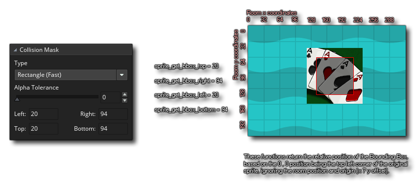

sprite_get_bbox_bottom(ind);
Argumento Descripción ind El índice del sprite para verificar.
Real
Esta función devuelve la posición relativa de la parte inferior del cuadro delimitador del sprite. Este valor se da como un valor relativo basado en la esquina superior izquierda del activo de sprite base que es (0,0). es el mismo valor que se puede encontrar en el editor de sprites para las propiedades de la máscara de colisión. La imagen a continuación muestra cómo se calcula: 
var ww, hh;
ww = sprite_get_bbox_left(sprite_index) -
sprite_get_bbox_right(sprite_index);
hh = sprite_get_bbox_bottom(sprite_index) -
sprite_get_bbox_top(sprite_index);
El código anterior calcula el ancho y la altura de la máscara de colisión en función de las posiciones laterales relativas del cuadro delimitador.